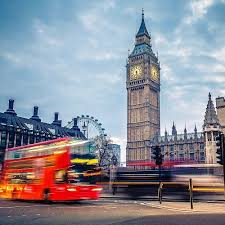
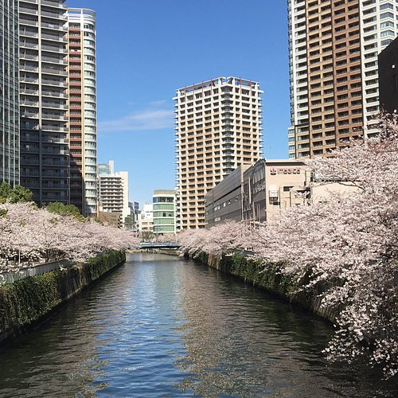
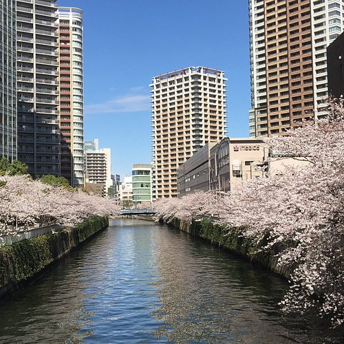

Most Popular Cities In The World
Go to:
List of most popular cities in the world
Learn info about other cities by clicking on images!


 


New York, often called New York City or NYC, is the most populous city in the United States, located at the southern tip of New York State on one of the world's largest natural harbors. The city comprises five boroughs, each coextensive with a respective county. New York is a global center of finance and commerce, culture, technology, entertainment and media, academics and scientific output, the arts and fashion, and, as home to the headquarters of the United Nations, international diplomacy.

Cape Town is the legislative capital of South Africa. It is the country's oldest city and the seat of the Parliament of South Africa. It is the country's second-largest city, after Johannesburg, and the largest in the Western Cape. The city is part of the City of Cape Town metropolitan municipality. The city is known for its harbour, its natural setting in the Cape Floristic Region, and for landmarks such as Table Mountain and Cape Point. In 2014, Cape Town was named the best place in the world to visit by The New York Times, and was similarly ranked number one by The Daily Telegraph in both 2016 and 2023.

Berlin is the capital and largest city of Germany, both by area and by population. Its more than 3.85 million inhabitants make it the European Union's most populous city, as measured by population within city limits. The city is also one of the states of Germany, and is the third smallest state in the country in terms of area. Berlin is surrounded by the state of Brandenburg, and Brandenburg's capital Potsdam is nearby. The urban area of Berlin has a population of over 4.5 million and is therefore the most populous urban area in Germany. The Berlin-Brandenburg capital region has around 6.2 million inhabitants and is Germany's second-largest metropolitan region after the Rhine-Ruhr region, and the sixth-biggest metropolitan region by GDP in the European Union.